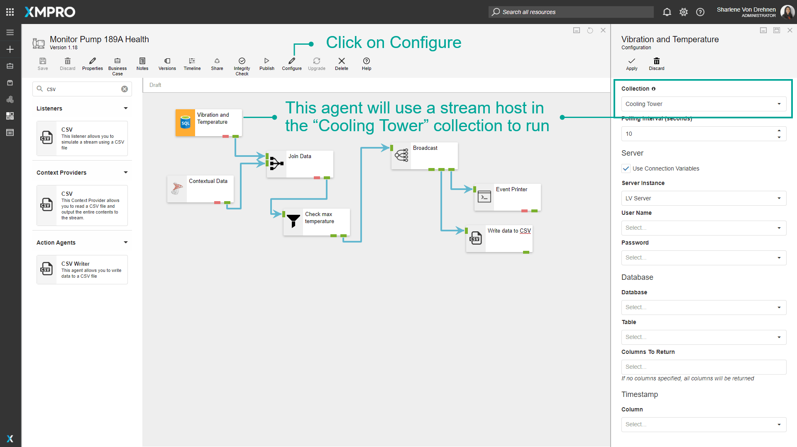
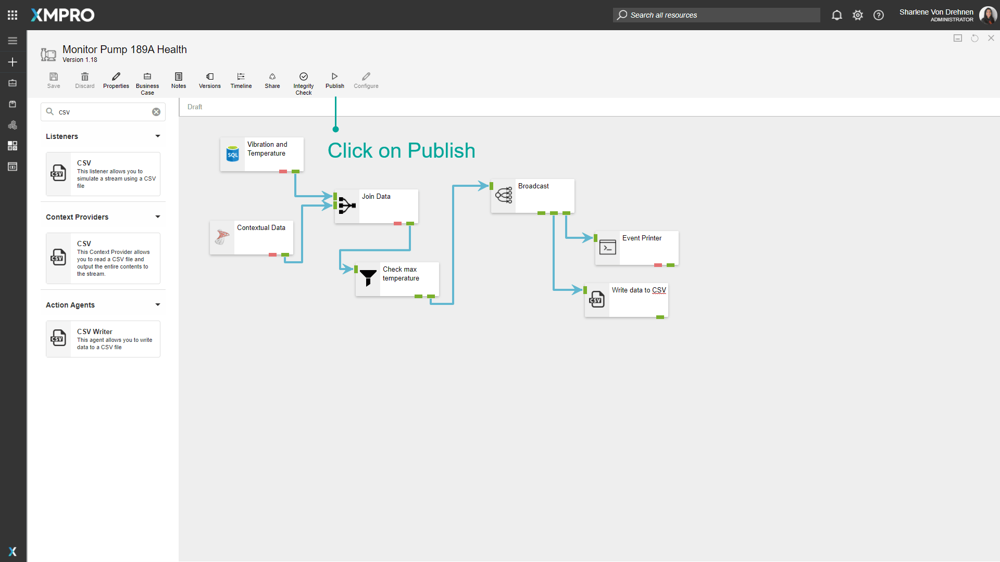
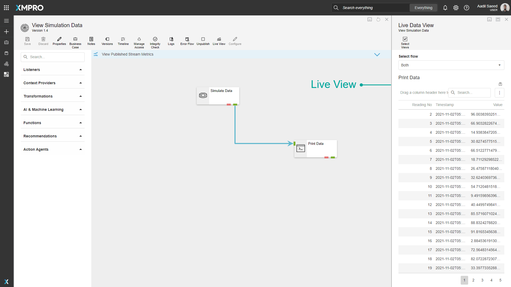

Running Data Streams
Running Data Streams
Data Streams need to be running to start performing the functions they have been designed to do. When you click on the "Publish" button, your Stream will start running. As soon as this button is clicked, the engine will look at which Collection each Agent in the Data Stream is associated with. It will then look at which Stream Hosts are available for use in each Collection and use those Stream Hosts to allow Agents in that Collection to execute actions. To read more about how Stream Hosts and Collections work, click here.
To verify which collection an Agent will use, click on the "Configure" button.


Viewing Live Data
The Live View functionality in Data Stream Designer allows you to view data as it is processed by the Agents in your Stream. For each Agent in your Stream, you can let the data display in either a grid, gauge, or chart. To view this data, select the "Live View" button after publishing your Stream. Next, select the Agents you would like to view the data for.
Note
Pre v4.3.7, users should close the Live View before navigating away to signal to the Stream Host to stop sending the data.

Further Reading
Last modified: January 16, 2026